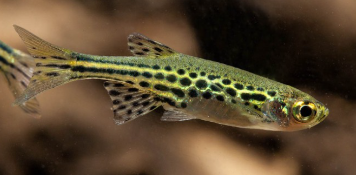

Systématique
- Ordre : Cypriniformes
- Famille : Danionidae
- Genre : Danio
- Espèce : D. tinwini

Danio tinwini, parfois appelé Danio à anneaux dorés, est une petite espèce décrite scientifiquement en 2009. C'est l'un des plus petits représentants du genre Danio, ce qui en fait un poisson de choix pour les petits aquariums (nano-aquariophilie).
Il mesure adulte seulement 2 à 3 cm. Son corps est légèrement translucide, parsemé de taches sombres dont beaucoup présentent un centre clair ou doré, donnant l'impression d'anneaux. Les nageoires sont également tachetées, ce qui est assez rare chez les Danios.
Délicat et paisible, c'est une espèce magnifique qui demande une eau de qualité et un environnement calme.
C'est un poisson grégaire qui doit vivre en groupe. En raison de sa très petite taille, un banc d'au moins 10 à 15 individus est recommandé pour qu'ils se sentent en sécurité.
Il occupe principalement le tiers inférieur et médian de l'aquarium, nageant souvent près du substrat ou parmi les plantes. Très paisible, il ne doit pas être associé à des poissons trop grands ou trop vifs qui pourraient l'intimider ou le considérer comme une proie.
Mode : ovipare.
C'est un diffuseur d'œufs. La reproduction est assez facile en bac spécifique tapissé de mousse de Java. Les œufs sont non adhésifs et tombent au fond.
Les adultes ne s'occupent pas de la progéniture et mangent les œufs. Les alevins sont minuscules à l'éclosion et nécessitent des infusoires ou de la nourriture liquide très fine (type paramécies) avant d'accepter les nauplies d'artémias.
Dimorphisme sexuel : Les femelles sont visiblement plus rebondies au niveau du ventre et souvent légèrement plus grandes. Les mâles sont plus sveltes et présentent des couleurs et des motifs plus contrastés, notamment des nageoires plus joliment tachetées.
Espérance de vie : Environ 2 à 4 ans.
Il est endémique du nord du Myanmar (État de Kachin). Il a été collecté dans de petits ruisseaux affluents de l'Irrawaddy. L'eau y est généralement claire, peu profonde, avec un fond composé de galets, de sable et de boue, souvent riche en végétation aquatique.
Répartition

Origine naturelle :
- Asie du Sud-Est.
- Myanmar (Birmanie).
- État de Kachin (Nord), près de Myitkyina.
Paramètres de maintenance
Température : 20 à 26 °C (préfère la fraîcheur, 22-24°C est idéal).
pH : 6,5 à 7,5.
GH : 2 à 10 °dGH (eau douce à moyennement dure).
Courant : Faible à modéré.
Volume conseillé : Minimum 40 à 60 L. Bien que petit, il a besoin d'un espace de nage (60 cm de façade minimum) pour vivre en banc.
Régime alimentaire
Régime : omnivore / micro-prédateur.
Dans la nature, il se nourrit de larves d'insectes et de zooplancton minuscule.
En aquarium, il faut adapter la taille de la nourriture à sa petite bouche : paillettes écrasées, micro-granulés, et surtout nauplies d'artémias, cyclops ou micro-vers pour le garder en bonne santé.